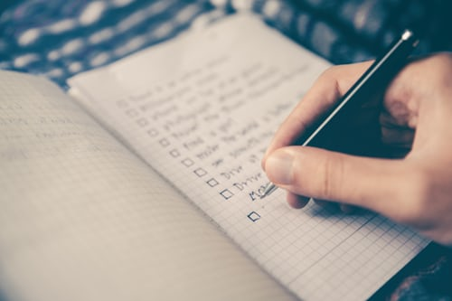

생활코딩이란 입문동영상을 통해 html,css,JS기본강의를 모두 수강한 후 11월 18일부터 12주동안 진행되는 코드스테이츠의 pre-course과정을 완료하여 입문 그리고 기초를 다지는 시간을 갖으면서 코딩과 먼저 친해지는 시간을 갖으려한다.
pre-course과정이 끝나면 이제 심화단계로 약 1년의 과정동안 온라인강의를 통해서 코딩을 깊게 배우는 시간을 갖을 것 이다. 회사일을 하면서 동시에 코딩공부를 해야하기 때문에 쉽지않을테지만 1년의 기간을 가지고 다져가는 것이 나의 목표이다. 심화과정 1년이 지난 시점 2021년에는 개발자로 전향하여 근무하는 것이 목표이다.